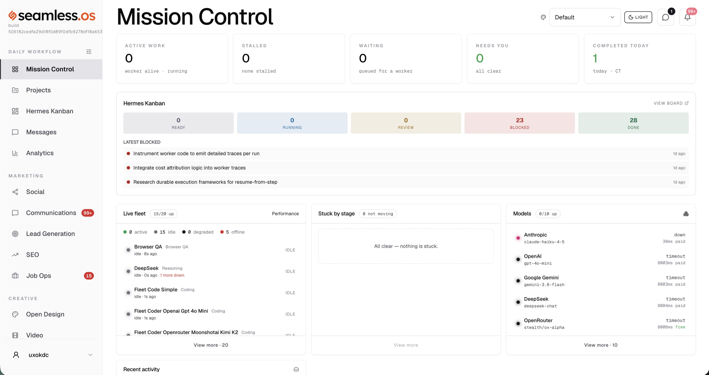
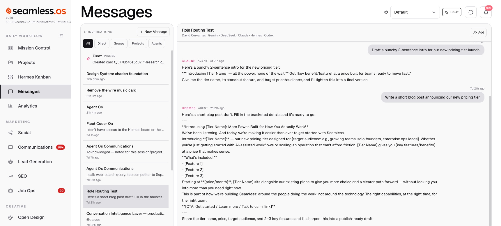
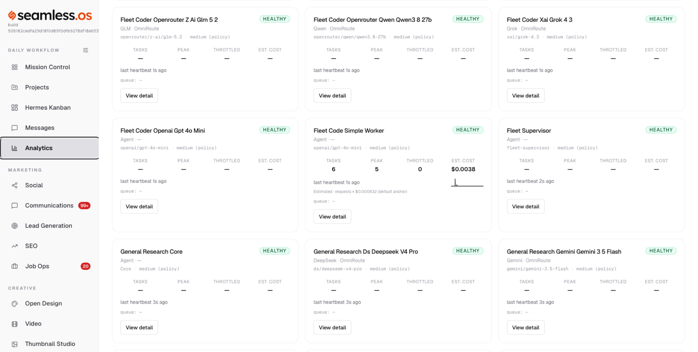
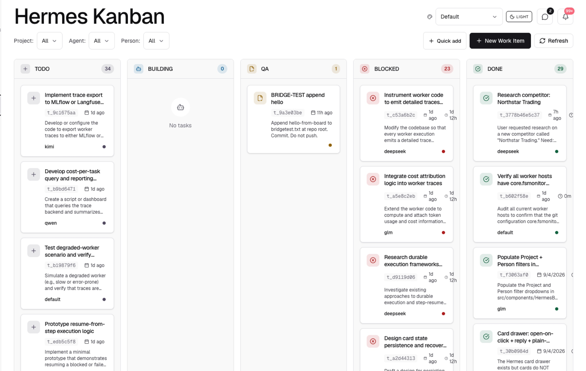
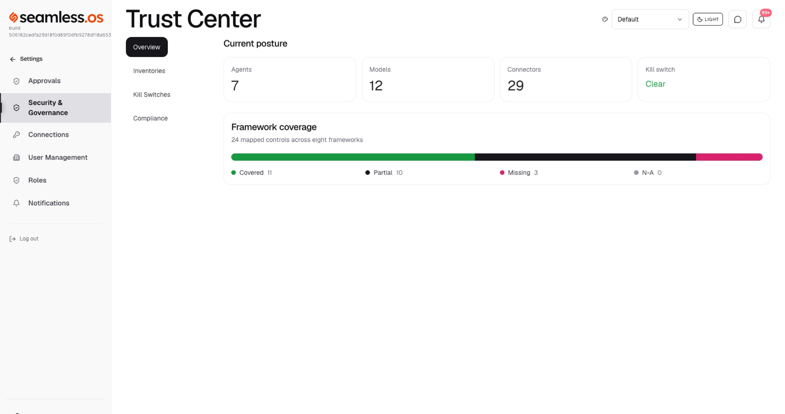
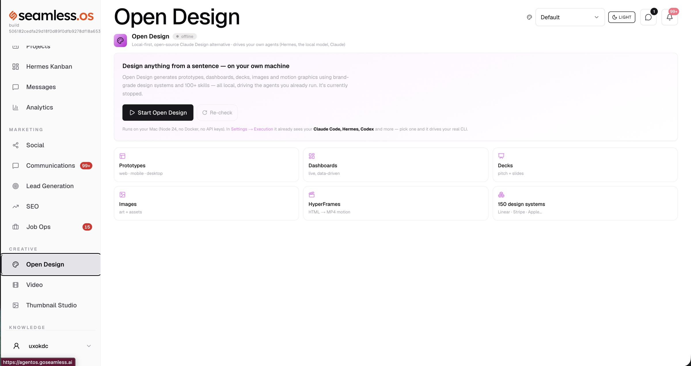

As my AI workforce grew, coordination became the real product problem. So I designed Agent OS: one operating layer for projects, specialized workers, model routing, context, evidence-based QA, approvals, communications, and the decisions that still require a person.

Mission Control — the daily view: what's active, what's blocked, what needs a person, and the health of the worker fleet and models behind it.
I could give increasingly capable AI agents real work. Coordinating them was becoming a job of its own.
Tasks moved between Claude, Codex, Hermes, Muse, Gemini, DeepSeek, and other specialized workers. Each could do something valuable. The larger system still struggled with context, ownership, continuity, verification, escalation, and knowing when a human actually needed to step in.
An agent could finish a task without completing the larger outcome.
Context disappeared between sessions; decisions were repeated because the next worker didn't know what had been settled.
Agents sometimes looped, worked from stale branches, or reported "done" without meaningful proof.
I had become the routing layer, memory system, project manager, and final verifier.
Adding another model would not fix that. The real problem was coordination and trust.
Most AI tools are designed around a single exchange: a person asks, the model responds, the interaction ends. Real work does not behave that way. It crosses days, people, tools, decisions, failures, and changing context.
The original question was “How do I manage multiple AI agents?” The more useful question became:
How should a human + AI organization operate?
That changed the product from a fleet dashboard into an operating layer. The AI does the volume. The human handles the moments that require judgment.

Intent before interface — the operator states an outcome; the system routes it to the right worker and keeps the conversation in one place.
This is not human versus AI. It is a designed handoff between volume and judgment.

Model routing as its own layer — OmniRoute separates the work decision from the model decision, choosing a provider by fit, availability, cost, and health.
Backlog → Building → QA → Design Review → Done
“Done” became an evidence state. A successful response is not proof of a successful outcome. The workflow requires evidence appropriate to the work — tests, screenshots, browser verification, live URLs, response codes, or commit references. HTTP 200 alone is not proof that an experience works.
QA tests against the actual artifact, and the builder should not be the only verifier. Design Review is where human judgment is applied to experience quality that can't be reduced to an automated assertion. Blocked is metadata, not a place where work disappears.

Hermes Kanban — one pipeline for the whole fleet. Each card carries its owner, state, and the evidence that closes it.
One of the most useful lessons came from a Codex deployment loop. Codex was committing work into disposable worktree branches while the meaningful product commits lived elsewhere. A deployment was technically successful — but it was built from stale code. The system could report activity and even produce a working URL without delivering the current product.
Agent activity is not the same as business progress.
The response was to strengthen canonical project state, branch ownership, deployment provenance, and evidence requirements. Every Agent OS workflow is now designed to preserve the chain between intent, execution, evidence, and outcome.
Agent OS does not rely on a model remembering that it should behave safely. Trust is encoded through worker permissions, project and company policy, approval checkpoints, send gates, evidence requirements, model health and fallback, independent QA, design review, a system-wide kill switch, and an audit trail of actions and decisions.
Autonomy is deliberately graduated. Infrastructure may exist before the authority to use it is enabled. That restraint is a product feature, not unfinished thinking.

The Trust Center makes posture legible — agents, models, connectors, the kill switch, and control-framework coverage in one place.
I separate what is built from what is planned. Agentic products lose credibility quickly when a roadmap is presented as a result.

One operating layer, many surfaces — the same fleet drives project work, communications, SEO, and design without the user managing the machinery.
Agentic experience extends beyond conversation. The experience is the relationship among intent, context, intelligence, interface, action, control, and outcome.
Orchestration is a product problem. Routing is one layer; a usable system also needs continuity, permissions, recovery, observability, evidence, and understandable human intervention.
Human attention is a scarce system resource. Autonomy should remove routine coordination while protecting meaningful judgment.
The model is not the differentiator. Models improve and providers change. The durable advantage is the operating model and the product judgment around them.
I am not positioning myself as an infrastructure engineer. My role is designing the operating model and experience that make agentic systems useful, trustworthy, and buildable — and leading the cross-functional work required to bring them into production.